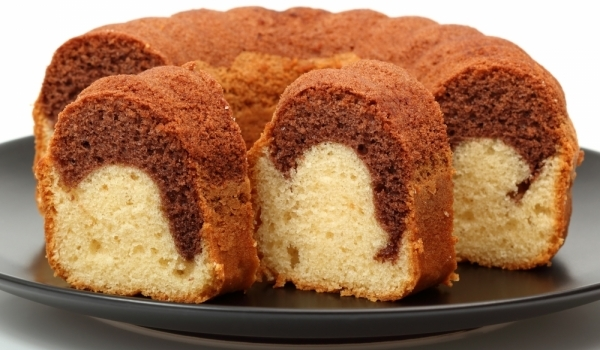

Захарта и яйцата се разбиват с помощта на миксер. Разбивайки се добавя олиото и портокаловия сок. Брашното се смесва с бакпулувера и ванилията. Тази смес се добавя към сместа с яйцата. Разбива се всичко с миксер. Настъргва се кора от лимон. Към част от готовата смес се добавя какао. Във формичка се добавят смесите и най-отгоре се поставят орехите. Пече се на 150 градуса 60 минути.